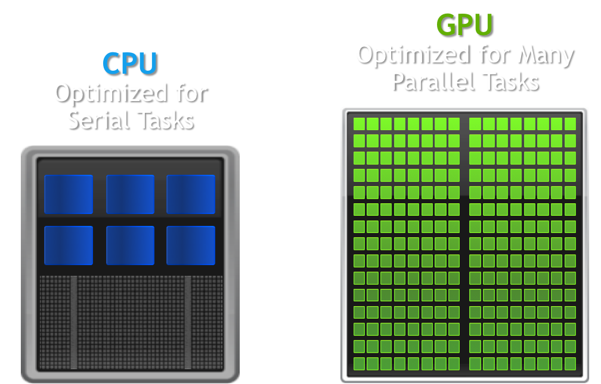

The Basics of GPU Usage
Classically the purpose of a GPU (graphics processing unit) was how it sounds, a GPU was used by a computer for rendering 3D graphics more efficiently than a CPU (central processing unit) would. This is because the rendering of 3D graphics entails performing many simple calculations: such as floating-point arithmetic, matrix calculations, and RGB colour calculation, most of which can be done independently of each other (in parallel). The calculations can be performed at the same time to give the same result as performing them in series, so GPUs have thousands of cores all that can simultaneously perform the required calculations as opposed to the single-digit number of cores a CPU will likely have, vastly outclassing the latter in 3D graphics task. However, each core in a GPU will be significantly slower than a CPU’s core so a GPU will be much slower than a CPU for any task that can not be run in parallel.
